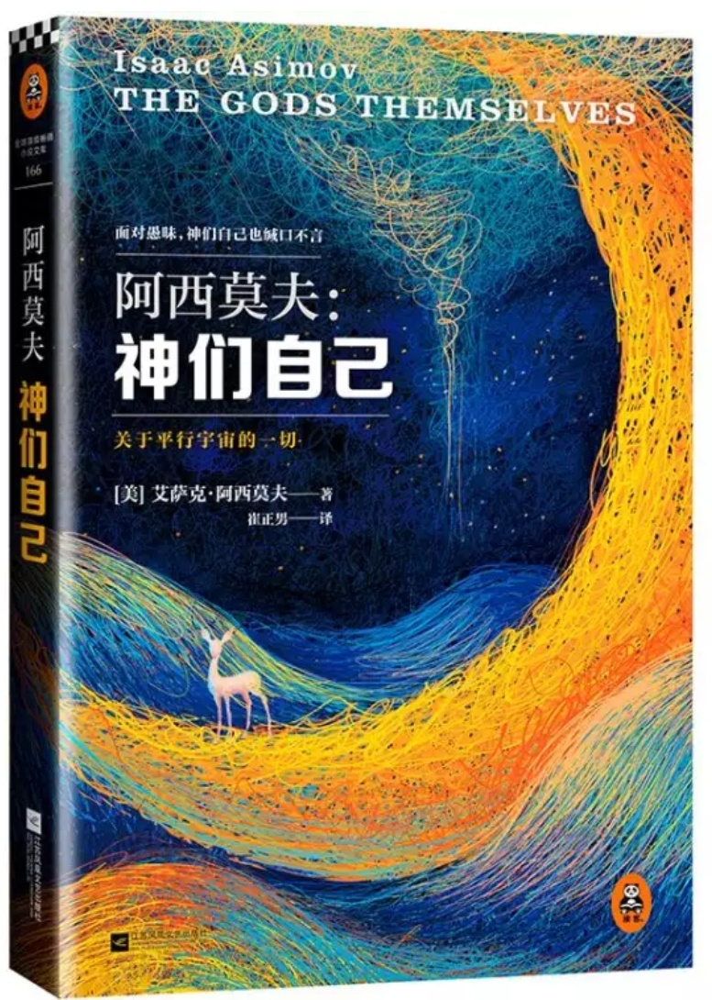

图书
小说
世界名著
中国
英国
美国
日本
其它国家
科幻小说
侦探小说
仙侠小说
武侠小说
网络小说
历史小说
穿越小说
传记小说
古典小说
盗墓小说
魔幻小说
玄幻小说

作者：
阿西莫夫
出品：
读客读书
出版社：
江苏文艺出版社
副标题：
关于平行宇宙的一切
开本：
32开
国际标准书号ISBN：
9787539978529
所获奖项：
1972年星云奖
1973年雨果奖
1973年轨迹奖
内容简介 · · · · · ·
❖ 22世纪，地球可以和平行宇宙进行物质交换， 从此拥有了源源不绝的能源。
❖ 但是，只有几个人才知道危险的真相： 地球上的一个无人信任的科学家、能源渐渐枯竭的星球上的一个外星人、月球上出生的一个拥有预言能力的人类。
❖ 只有他们知道，人类即将为看似源源不绝的免费能源付出巨大的代价……
作者简介 · · · · · ·
❖ 艾萨克•阿西莫夫 Isaac Asimov （1920 ~1992）
❖ 俄裔美籍作家，全知全能，被全世界读者誉为“神一样的人”。美国政府授予他“国家的资源和大自然的奇迹” 这个独一无二的称号，以表彰他在“拓展人类想象力”上做出的杰出贡献。
❖ 阿西莫夫一生之中著作近500 本，涉及杜威图书分类法的每一个范畴，涵盖人类生活的每一个层面，上天 下海、古往今来、从恐龙到亚原子到全宇宙无所不包，从通俗小说到罗马帝国史，从科普读物到远东千年历史，从圣经指南，到科学指 南，到两性生活指南，每一部著作都朴实、严谨而又充满幽默风趣的格调。
❖ 1972年，阿西莫夫的长篇小说《神们自己》首次登上《银河科幻》杂志，并相继斩获代表了全球科幻界最高 荣誉的星云奖、雨果奖和轨迹奖等多项大奖。多年来，这部作品被全球科幻迷奉为必读的阿西莫夫集大成之作，同时，也是阿西莫夫本 人最偏爱的作品。
目录：
❖ 第一部 ……面对愚昧 /1
❖ 第二部 ……神们自己/73
❖ 第三部 ……也缄口不言/187
丛书信息:
❖ 读客全球顶级畅销小说文库：阿西莫夫作品 (共14册), 这套丛书还有 《银河帝国5：迈向基地》,《银河帝国 ：基地》,《银河帝国6 ：基地边缘》,《银河帝国：基地七部曲》,《永恒的终结》 等。
去阅读
回首页